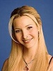
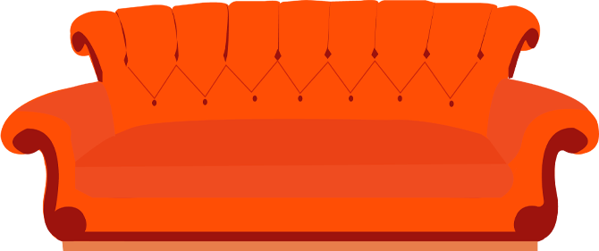

Friends is an American sitcom created by David Crane and Marta Kauffman and presented on the NBC television network between September 22, 1994 and May 6, 2004,
with a total of 236 episodes. The series revolved around a group of friends who lived in the neighborhood of Greenwich Village on the island of Manhattan in New York City.
The series was produced by Bright/Kauffman/Crane Productions in association with Warner Bros. Television. The original executive producers were Crane,
Kauffman and Kevin S. Bright, with many more to be promoted later.
Characters
Joey Tribbiani (Matt LeBlanc)
He is an actor, despite not having a very successful career. On the other hand, he has a very active romantic and sexual life, thanks to his irresistible charm.
(which doesn't match the lack of brilliance of your mind).
Monica Geller (Courteney Cox)
A friend of Rachel's from high school, Monica is Ross' sister and works as a chef.
Chandler Bing (Matthew Perry)
No one really knows what he does, but he's always cracking jokes and giving thanks to the group. Furthermore,
is the son of a non-traditional family with a mother who authored erotic books and a trans father.

Phoebe Buffay (Lisa Kudrow)
She is a masseuse and has a very troubled family life. She once lived on the streets, had a mother who committed suicide,
managed the triplets of a brother and still has to deal with a twin sister.
Ross Geller (David Schwimmer)
Monica's brother, he is a paleontologist and was in love with Rachel as a teenager. Later, in college, he befriends Chandler.
Rachel Green (Jennifer Aniston)
She is presented as the mother of the group, after giving up a marriage of convenience and going after working in the field of her dreams: fashion.

The series is available on the HBO MAX stream
visit the link below and have fun times with this wonderful series!